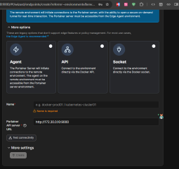
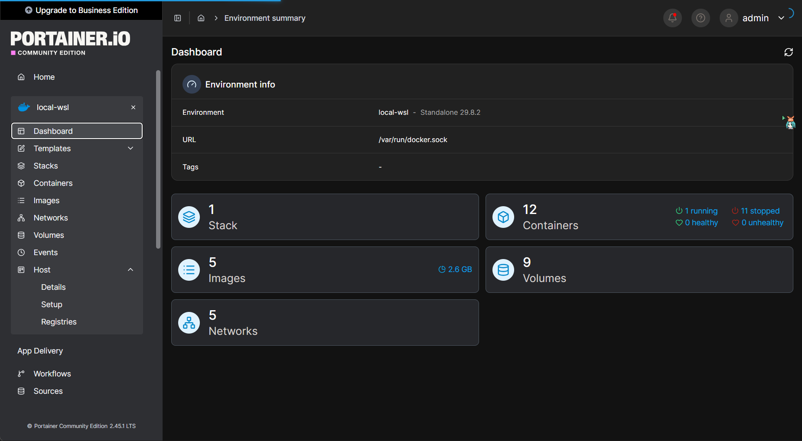

原生命令
1
2
3
4
5
6
7
8
9
10
11
12
13
|
# ── 资源监控 ──
docker stats # 实时 CPU/内存/网络/IO，类似 top
docker stats --no-stream # 只采样一次，脚本里好用
docker system df # 磁盘占用：镜像/容器/卷/构建缓存
# ── 事件与日志 ──
docker events # 实时事件流（启停、拉取、挂载...）
docker compose logs -f --tail=100 # 跟踪服务日志
# ── 进程与详情 ──
docker compose top # 容器内进程
docker inspect 容器名 # 完整配置+运行状态（JSON）
docker logs --since 1h 容器名 # 按时间过滤日志
|
可视化管理面板
个人使用portainer
建议不要改动compose
1
2
3
4
5
6
7
8
9
10
11
12
|
services:
portainer:
image: portainer/portainer-ce:latest
ports:
- "9000:9000"
volumes:
- /var/run/docker.sock:/var/run/docker.sock
- portainer_data:/data
restart: unless-stopped
volumes:
portainer_data:
|
1
2
|
// 在compose目录下运行
docker compose -f compose.yaml up
|
访问http://172.30.0.10:9000到界面
登录用的token在容器logs查看
1
2
3
|
//账密
admin
aaaaaaaaaaaa
|
选择socket连接，取名即可


监控告警
Prometheus + Grafana + cAdvisor
三个组件分工：
- cAdvisor：自动发现容器，采集 CPU/内存/网络/文件系统指标
- Prometheus：时序数据库，定时抓取存储，可查历史
- Grafana：仪表盘展示，可配告警
生产环境使用，个人开发没必要安装